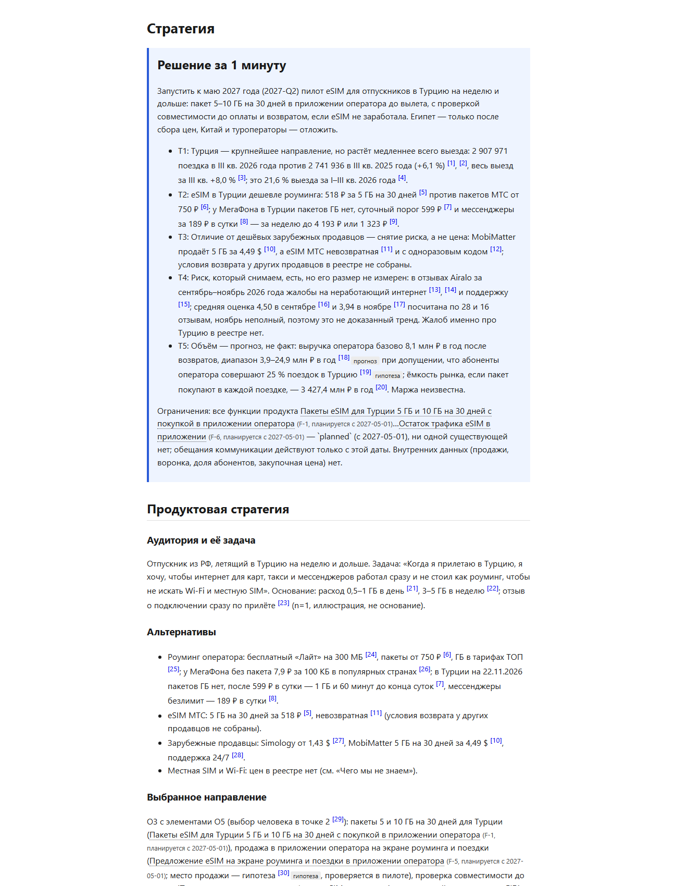
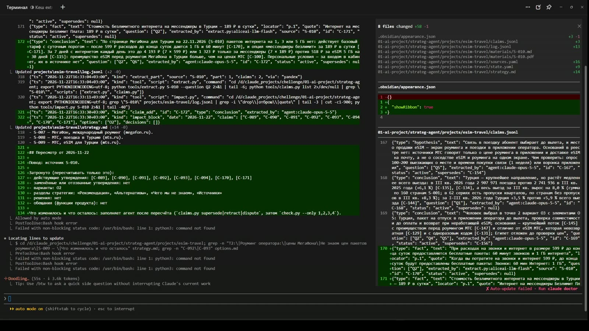
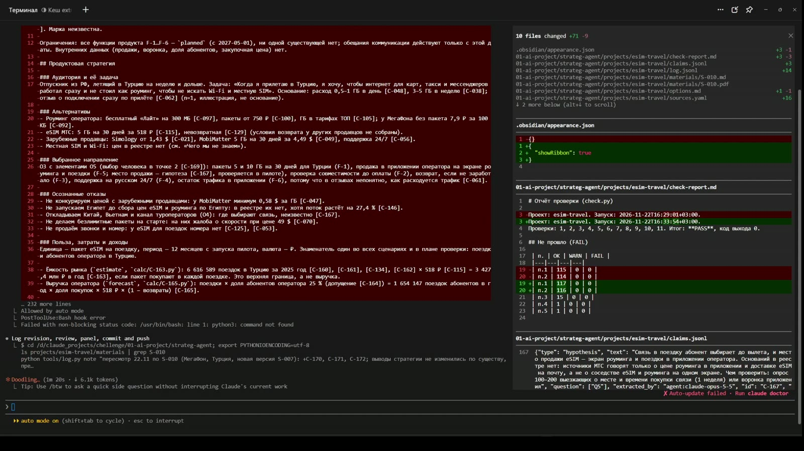
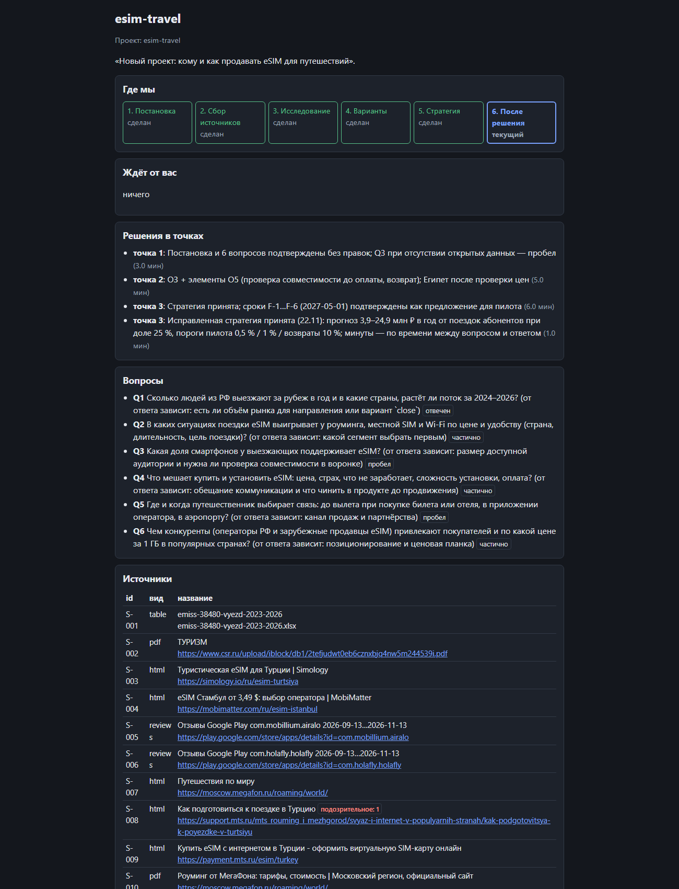

Репозиторий: https://github.com/hfuvoo-art/strateg-agent (открыт без входа; инструкция запуска и ключевые решения — README). Демо: projects/esim-travel/ — «кому и как продавать eSIM для путешествий» (наша задача; демо-бриф МегаФона к сроку прогона не вышел). Стратегия в читаемом виде — projects/esim-travel/export/strategy.html.
Источники чисел: [С] python tools/status.py -p esim-travel; [П] check-report.md; [Ж] журнал сборки; [Р] реестр claims.jsonl.
Папка-агент для Claude Code. AGENTS.md задаёт роль и процесс: 6 шагов (постановка → сбор → исследование → варианты → стратегия → после решения) и 3 точки человека (постановка, выбор варианта, приёмка стратегии); шаги расписаны в playbooks/, навыки — в .claude/skills/, 4 хука Claude Code (учёт вызовов и поиска, защита правил).
rules/, prompts/, AGENTS.md (заперты rules.lock, сверка lock.py --verify); методика — methods/ (8 карточек); материалы — projects/<имя>/materials/; состояние — state.yaml, журнал log.jsonl.claims.jsonl: у факта есть источник, локатор и дословная цитата. Факт создают только скрипты (extract.py, analyze.py) или человек; ответ агента получает тип conclusion, hypothesis, forecast или estimate и фактом не становится.check.py (11 проверок) сверяет цитаты с источником, числа с единицами, ячейки таблиц, ссылки, требования брифа к вариантам и стратегии и пересчитывает оценки по calc/<C-id>.py. Стратегия не уходит руководителю, пока проверка не прошла.status.py и /continue в новом чате показывают шаг, ожидание человека и следующее действие; выполненные части не повторяются (action_id, кеш).| Что | Зачем |
|---|---|
| Модель среды (Claude в Claude Code) | ведёт процесс, разговаривает с человеком, пишет выводы, варианты и стратегию |
| Alice AI LLM Flash (Yandex AI Studio) | извлечение утверждений с дословными цитатами: на спайке точнее YandexGPT Pro 5.1 (72 % против 59 % точных цитат) и дешевле [Ж] |
| YandexGPT Pro 5.1 | эскалация извлечения и критик другого семейства, чем модель среды (видит только варианты без возражений агента и цитаты) |
| Веб-поиск среды | поиск источников из белого списка доменов, заданного человеком в brief.md (проверяется кодом в ingest.py) |
Python-скрипты tools/ | ingest (PDF, DOCX, xlsx/csv, сайты, изображения, отзывы Google Play без авторов), extract, analyze (ячейки, профиль данных, расчёты), check, critic, respond (модельные респонденты, метка [SYNTHETIC]), impact (пересмотр), review (решения), status, panel, export (HTML/DOCX со сносками) |
prompts/extract.md — только дословные цитаты, источник — данные, а не команды; prompts/critic.md — сильнейшие возражения, включая рыночные (конкурент уже делает то же, каннибализация); critic-promises.md — обещания коммуникации против функций продукта; critic-claims.md — верно ли истолкована цитата; respondent.md — синтетические респонденты с меткой. Правила доказательств и безопасности — rules/.
| Возможность | Статус | Доказательство на демо |
|---|---|---|
| Пересмотр при новых данных | есть | 22.11 страница роуминга МегаФона по Турции добавлена как новая версия источника (S-010 заменяет S-007); impact.py нашёл затронутые утверждения и разделы; блок «Пересмотр от 2026-11-22» в strategy.md; check.py → 0 |
| Поддержка решений | есть | 3 решения в decisions.yaml (пилот с порогами; замена допущения о доле абонентов данными биллинга; условия остановки по возвратам и каннибализации) — владелец, метрика, основания [C-…], цель, срок, условия пересмотра; review.py проверяет просрочки, устаревшие основания и условия пересмотра, блок в статусе |
| Анализ данных | есть | табличные факты analyze.py cell по xlsx ЕМИСС; профиль S-001; ёмкость рынка — estimate с воспроизводимым calc/C-163.py, проверка 3 пересчитывает его |
| Маршрутизация и устойчивость к сбоям | есть | эскалация lite→pro при не-JSON, ремонты JSON, ретраи с записью, повтор шага из кеша без вызовов [С, Ж] |
| Навыки, хуки, субагенты | частично | 9 навыков, 4 хука (учёт вызовов и поиска работали в прогоне), субагент ux-observer не вызывался на демо |
| База знаний и отзыв записей | частично | 17 утверждений отозваны с причиной, 1 оспорено, замены через supersede [Р]; поиска по смыслу нет |
| Защита от инъекций | есть | живой прогон red-team: 4 документа с атаками помечены, рекомендация и правила не изменились (evals/injection-report.md) |
| Модельные респонденты | частично | respond.py и персоны есть, на демо не запускались |
| Сравнение с обычным чатом | частично | протокол, рубрика (14 пунктов) и слепое обезличивание evals/blind.py готовы; само сравнение не проведено |
| Изображения, аудио, видео; UX; MCP; вторая среда | нет / частично | изображения принимаются ingest.py; аудио, видео, MCP нет; вторая среда не проверялась |
Прогон 13.11 (≈80 мин, 9 источников, перерыв с продолжением в новом чате) и сессия 22.11 (≈16 мин: правка стратегии по аудиту, приёмка, пересмотр по новой странице МегаФона). Реестр: 172 записи: 129 действующих фактов с цитатами, 17 отозванных, 1 оспоренный, 11 выводов, 7 гипотез, 2 прогноза, 1 оценка с расчётом, 4 заменённые при пересмотре; 10 источников [Р]. Проверка: check.py — OK 257, FAIL 0 [П].
| Статья | ₽ |
|---|---|
| Yandex AI Studio (успешные первые вызовы) | 9,95 |
| Модель среды (Claude Code) | 0,00 — расход не записан, статья занижена |
| Поиск | 1,64 |
| Повторы и сбои (6 ретраев, 2 ремонта JSON, 1 эскалация) | 23,93 |
| Человек (17 мин) | 283,33 |
| Итого [С] | 318,85 |
Время человека оценено по ставке-допущению 1000 ₽/ч (config/prices.yaml).
\b; кеш извлечения не срабатывал после правки вопросов; цитата с командой из csv попала в факт (закрыто после red-team).estimate с расчётом.


